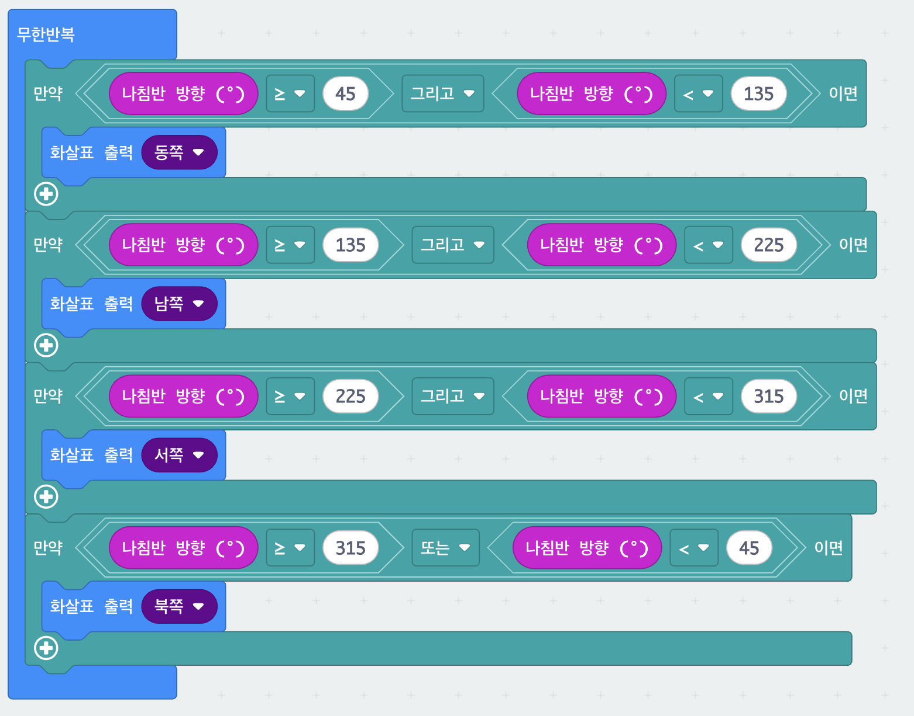

3. 스마트 나침반
micro:bit를 들고 몸을 돌리면 화면의 화살표가 따라서 바뀌는 나침반입니다. 나침반 센서가 알려 주는 0~359 사이의 각도를 네 구간으로 나누고, 구간마다 다른 화살표를 띄웁니다. 그리고(AND)로 "45 이상 그리고 135 미만" 같은 범위를 만드는 것이 핵심입니다.
화살표는 지금 micro:bit가 향하고 있는 방향입니다. (북쪽을 바라보면 북쪽 화살표가 나옵니다. 나침반 바늘처럼 북쪽을 가리키는 것이 아닙니다.)
블록 코드
그림을 클릭하면 크게 볼 수 있어요.

준비물
- micro:bit 본체 1대
- 첫 실행 때는 8자 그리기 보정이 필요합니다
사용법
| 들고 몸을 돌리기 | 방향에 따라 화살표가 자동으로 바뀝니다 |
|---|---|
| 처음 켰을 때 | 보정 화면이 뜹니다. 아래 안내대로 8자를 그려 주세요 |
화면에 나오는 각도 구간은 이렇게 나뉩니다.
| 45° ~ 135° | 동쪽을 향함 → 동쪽 화살표 |
|---|---|
| 135° ~ 225° | 남쪽을 향함 → 남쪽 화살표 |
| 225° ~ 315° | 서쪽을 향함 → 서쪽 화살표 |
| 315° ~ 45° | 북쪽을 향함 → 북쪽 화살표 |
막힐 때
처음 켜면 이상한 화면이 나와요.
보정(캘리브레이션) 화면입니다. micro:bit를 손목으로 크게 8자를 그리듯 돌려
화면의 점이 가장자리까지 다 채워지면 끝납니다.
화살표가 반대인 것 같아요.
이 나침반의 화살표는 내가 향한 방향입니다. 북쪽을 보고 서면 북쪽 화살표가 나옵니다.
진짜 나침반 바늘처럼 "북쪽이 어디인지"를 가리키는 것이 아니니 헷갈리지 마세요.
화살표가 자꾸 흔들려요.
자석·스피커·노트북 가까이에서는 값이 튑니다. 조금 떨어져서 확인하세요.